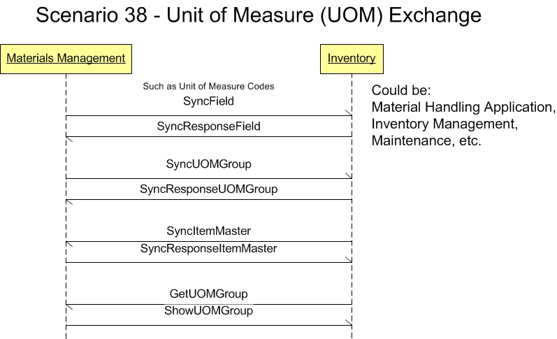

Scenario 38 - Unit of Measure Exchange38.0 OverviewScenario #38 describes the integration for supporting Unit-Of-Measure (UOM) information flows associated with items being managed as inventory.The purpose of this scenario is to enable the visualization of the participants in the process and the dialogs between them for this specific integration. This scenario is not meant to be the only model for integrating general ledger applications to a budget applications. This is simply one model that may be used to guide one's own integration efforts. This integration scenario extends OAGIS by addressing the need for applications to exchange alternative UOM information beyond the stocking UOM. While the stocking level UOM provides for basic inventory accounting functionality, it may not be the most efficient, common or natural UOM for manufacturing, purchasing, selling or handling the item. The item may be packaged into standardized or supplier-specific bulk quantities for import/export, wholesale, or retail sales (for example: Each, Box, Case, Pallet, etc). The item may be also utilized in manufacturing, inspection or other processes in fixed quantity amounts that may be both common (Pair, Dozen, Gross, etc) or item-specific (Tray, Set, Spool, etc). The materials management, inventory control, warehousing and receiving/shipping departments within an organization require the packaging relationship details between UOMs and the handling characteristics for each UOM to effectively manage the flow and storage of inventory. The UOM information flows in this integration scenario also incorporate the Uniform Code Council's "best practices" for item and packaging container identification standards by supporting a unique bar code identifier at each packaging level. The United Nations Economic Commission for Europe (UNECE) provides Codes for Unit of Measure Used in International Trade through Recommendations Number 20. UNECE Recommendation Number 20 is an international standard for unit of measure codes that is suggested to be used. 38.1 Scenario DiagramThe scenario below contains the participants involved in the interaction, the dialog flows or conversation between them, certain assumptions about the sequence of events, and assumptions about the technical approach, for example, publish and subscribe.This is a model to be used as a design recommendation, not a required approach.  38.2 AssumptionsThis scenario assumes a loosely coupled, asynchronous approach with transaction management required but not explicitly defined.This scenario describes the model for a central materials management component to communicate information about items and their associated UOM relationships to one or more subscribing components. This scenario is designed to support both event-driven (using Sync and Notify BOD verbs) and request/reply (using Get, and Show BOD verbs) modes of application-to-application communication. The flow of item and UOM information is generally outward toward the subscribing components. However, the Sync verb does permit bi-directional flow, allowing for the possibility of a subscribing system to attempt to synchronize certain item characteristics on the master database. This scenario assumes that central master application will only update auxiliary item attribute information that it does not "own" (per the original scenario diagram processing notes for Sync ItemMaster). In such a bi-directional sync scenario, the determination of item characteristic ownership and update processing rules is left to the designer of the specific implementation. The environment for this integration is application-to-application (A2A) within a single enterprise, or extended across enterprises where there is a single master application that manages the assignment of all item identifiers. For business-to-business (B2B) environments where there is no master or common set of item identifiers, an item catalog containing item cross-reference information is required to correlate item definitions between business partners. See the Catalog Exchange Integration Scenario more information. 38.3 Participant DefinitionsThis Scenario contains two major participants: the materials management and inventory applications.In this integration scenario, the materials management component is considered to be the owner and source of all item and UOM information. For example, the materials management component may be the material/inventory management subsystem of a SAP R/3 or Oracle Applications ERP system. A subscribing application with an independent data store for item/UOM information would typically function in event-driven mode, receiving synchronization updates at an "as required" or periodic interval. A subscribing application without an independent data store for item/UOM information would typically function in request/reply mode. The materials management application or other subscribing applications may manage the item's UOM & packaging relationships as an intrinsic part of each item definition (item-dependent) or as entirely separate groupings that are later associated with one or more items (item-independent). The item-dependent UOM methodology tends to be found in some legacy inventory management applications, while the item-independent UOM methodology reflects a more modern, normalized data approach. However both methodologies are commonly found in various applications present in today's marketplace. The Sync & ShowItemMaster BODs are intended for use when the materials management component or the subscribing application only supports the item-dependent UOM methodology. They also are intended for use when both the Materials Management component and subscribing application mutually support the item-independent UOM methodology. They are still used to transfer item attribute information and a reference to the UOM relationship. The following example may help explain the differences between the item-dependent and item-independent UOM methodologies; Pre-recorded DVDs from the same vendor/distributor are quite likely to have the same bulk packaging relationship regardless of the information contained on the disks. Suppose the UOM packaging relationship is:
The item-independent UOM methodology can significantly reduce the amount of redundant UOM & packaging data that must be maintained and sent, especially in an inventory situation having many thousands of similar items. 38.4 Business Workflow (Sequence)The business workflow is graphically represented by starting at the Scenario top and reading from top down and from left to right.Event Driven Mode (using Sync BODs):
38.5 Exception HandlingException handling is highly localized as the result of an implementation's infrastructure, management and business rules. As such, this section of the Scenario documentation is planned to be used as a guide to help understand the additional intent of these Scenarios. If no exceptions are noted here, then it can be assumed that the Scenario designers agreed that the Scenario is straight forward and has no additional needs:
Copyright OAGi 2017 - All Rights Reserved -- OAGIS release 10.4 - Document Number: 20170501-38 |